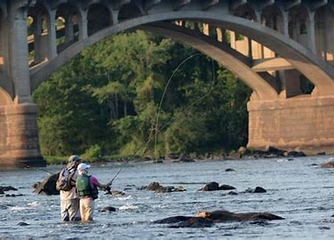

Hi, my name is Jeffrey Lord and I'm gonna try and teach you something about fishing in Columbia,SC. Growing up I have always wanted to get more invested in fishing and being in South Carolina has certainly given me the opportunites to give it a shot. I have lived in South Carolina for around 15 years and have been fishing on and off for as long as I can remember. I grew up in Charleston and mostly just fished in small rivers and ponds and coming here has kept the same feeling and has made me feel more at home. The goal of this page is to help everyone find some good spots to try fishing and certain things to look out for before getting started.

From my time in Columbia I have learned many things to remember but also a few things to avoid. Firstly, before even trying to go fish make sure you register with the South Carolina Department of Natural Resources and acquire a license to be able to fish legally. Secondly, Weather is very important for deciding when to fish because for example, after a rainstorm fish will be more attracted to the water surface making it a more productive time to go try and fish. Also, using certain baits can help increase your chances and I recommned using swimbait or live bait when trying to catch fish in these rivers/lakes. Although these are just a few tips to get you started you can find plenty of more information on the website at the bottom of the page and I hope you give fishing a try because its a very fun and relaxing activity get into.
Government Website for License
| Bait Type | Types of Fish |
|---|---|
| Swimbait | Walleye, Trout, and Bass |
| Jig | Panfish, Bluegill, and Crappie |
| Spinnerbait | Bass, Northen Pike, and Muskie |